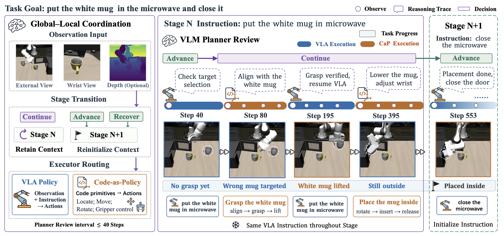
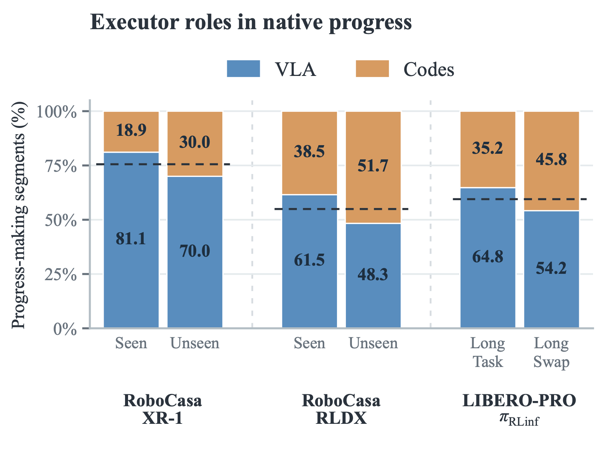
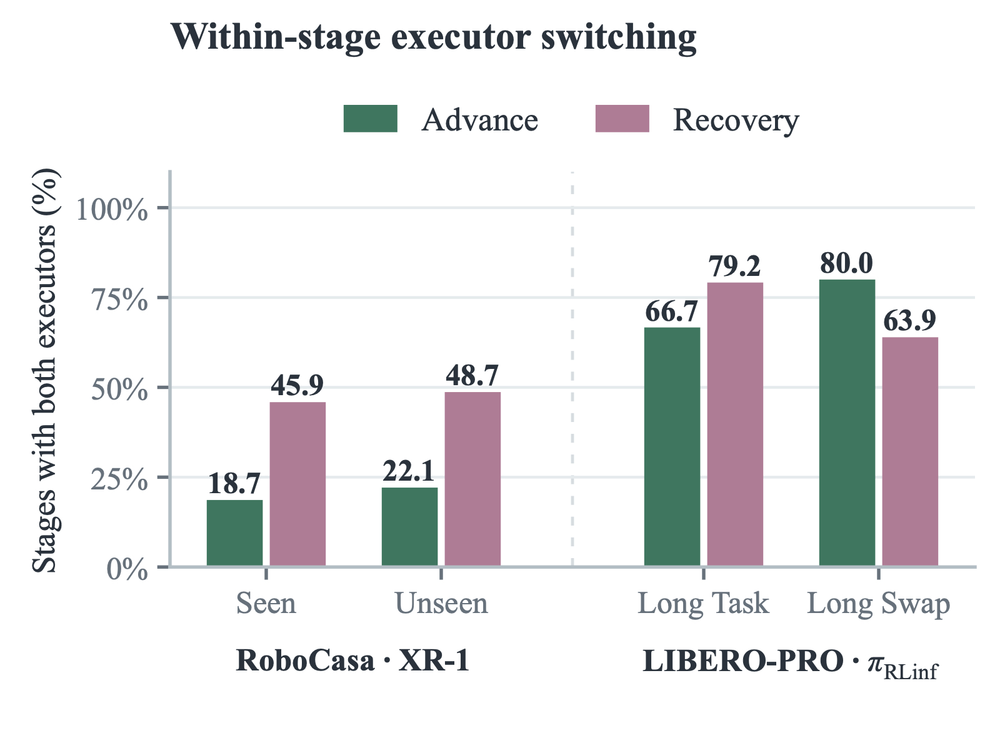
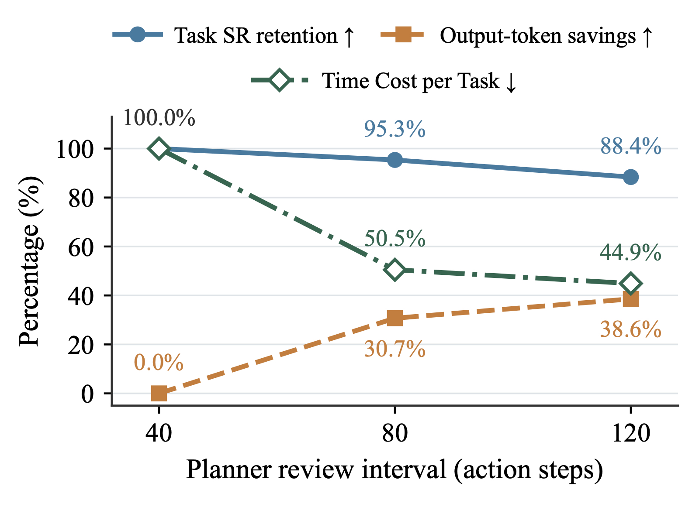

Case-Study Rollout Showcase (Paper & Supplementary)
Select any case study from the main paper (Section 5.5, Figure 5) or supplementary material (Figures S3 & S4) to inspect synchronized rollouts, VLA-vs-Code execution segments, STAGE transition boundaries (start / continue / advance / recover), and clickable physical-action checkpoints (20 Hz simulation steps).
Loading case study...
Inspect Recorded STAGE Decisions, Executor Tool Calls & Trajectory Archive Link
| Action Range | Type / Executor | Stage / Tool | Instruction / Arguments / Completion Criterion |
|---|
Open-Source Rollout Trajectory Dataset (Table 1 Self-Evaluated Cohorts)
All 680 canonical Main-Table episodes (both STAGE and our matched RPent-Hybrid reproduction across RoboCasa365 Composite and LIBERO-PRO Long) plus 4 coupled-goal diagnostic rollouts are archived under data/rollouts/ (~32 MB compressed). Each rollout preserves full physical action sequences, simulator/robot states, observation-checkpoint kinematics, tool-call intervals, and STAGE transition logs.
| Paper Table | Benchmark | Method | VLM (Effort) | Executors | Suite 1 SR (%) | Suite 2 SR (%) | Avg SR (%) | Episodes | Dataset Path |
|---|
# Clone repository and verify all 680 Main-Table + 4 Coupled-Case rollouts
git clone https://github.com/embodied-manipulation/stage-robotics.git
cd stage-robotics
python data/rollouts/inspect_rollouts.py
# Inspect STAGE transitions & VLA/Code calls for a specific rollout
python data/rollouts/inspect_rollouts.py \
--episode robocasa365_stage_xr1__composite_unseen__ArrangeTea__s1761Method Architecture & Coordination Analysis
STAGE decouples global objective progression (persistent stage contracts $g=(\ell, c)$) from local executor selection within a unified $W=40$ physical-action observation interval, retaining backend-compatible temporal context across same-stage handoffs.

start, continue, advance, recover) with local VLA and Code-as-Policy execution, preserving compatible sensor/action context within an unfinished stage and reinitializing cleanly at stage boundaries.


